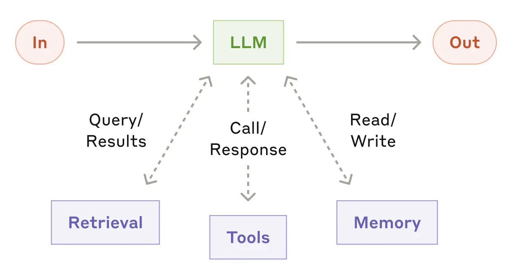

import boto3
SYSTEM_PROMMPT = """
<instruction>
You are a helpful agent for XYZ bank. You are ALWAYS patient, helpful, and always try to
assist the user in the best way possible.
</instruction>
"""
ROLE_PROMPT_REPORTING = """
You are tasked with account reporting.
Use the following function to look up the account information:
{
"function_name": "account_lookup",
"description": "a tool to retrieve account information for a user.",
"arguments": {
"username": {"type": str, "description": "user name"},
"security_code": {"type": str, "description": "security code"}
}
}
NEVER reveal account Ids.
"""
CONTEXTUAL_PROMPT = """
Use below account information <account> about the customer:
<account>
Username: {username}
account_type: {account_type}
</account>
"""
user_input = "Can you get the ending balance of each month for 2024?"
bedrock_runtime = boto3.client("bedrock-runtime", region_name="us-west-1")
bedrock_runtime_response = bedrock_runtime.converse(
modelId = "us.anthropic.claude-3-7-sonnet-20250219-v1:0",
system = [
{'text': SYSTEM_PROMMPT},
{'text': ROLE_PROMPT_REPORTING},
{'text': CONTEXTUAL_PROMPT.format(username = "caleb",
account_type = "savigns")}
],
messages = [{"role": "user", "content": [{"text": user_input}]}]
)1 Introduction
In artifical intelligence (AI), an agent is broadly defined as anything that can perceive and act in its own environment (Norvig and Intelligence 2002). With the rise of large language models (LLMs), LLMs are now used to power modern agentic systems by leveraging the general intelligence capabilities of a LLM (Brown et al. 2020). At its best, a LLM can dynamically decide the sequence of steps that need to be executed in order to accomplish a given task, essentially achieving autonomy.
In practice, agentic systems differ in the degree of reliance on the LLM as a decision maker, since the increased flexibility that LLMs provide also comes at the cost of reliability. On one end of the spectrum is a LLM workflow, which has LLMs participate in a limited scope within a broader predefined workflow. On the other end of the spectrum is a LLM agent, where the LLM directs its own workflow to accomplish a task. We can illustrate the difference between a workflow and an agent with a customer service chatbot example:
- Workflow: a potential workflow executes (1) intent classification by a LLM, (2) tool execution based on intent, and (3) LLM response generation. Based on the determined intent, only one tool is executed by following a pre-defined if-else control flow.
- Agent: given a set of tools, a LLM dynamically decides which tool to use in response to customer inquiry. In this process, multiple tools can be used any number of times, with the steps planned or decided by the LLM itself. Once the LLM determines it has collected sufficient information from tool-use to respond, it generates a final response to the customer.
While an agent can tackle tasks more adaptively, it is also less predictable and reliable. On the other hand, workflows are more deterministic and thus more reliable, but they are limited in their ability to tackle more open-ended tasks where there may not be one obvious approach. Choosing between a workflow and an agent requires considering the balance of flexibility and reliability needed for the application. In the rest of this book, the word agent will be used interchangeably with agentic systems, with the distinction between workflows and agents expliclty called out only when necessary.
Building an agentic system from a LLM requires a prompt, tools, and memory. The prompt is piece of text that instructs the LLM on how to behave within the agent application. Tools allow an agent to take actions and is typically assessed by an agentic system in the form of an API. Finally, memory allows an agent to act and behave in a contextualized manner, with user information or conversation history being common memory contexts. Each of these components are the building blocks that can be used to create and shape a LLM agent. Figure 1.1 illustrates an agentic system and its components:

1.1 Prompt
A prompt is a piece of text that instructs a LLM how to behave within an agent application. A prompt can be organized conceptually into a system prompt, contextual prompt, role prompt, and a user prompt. In the end, they are all concatenated together into a single text input when invoking the LLM (i.e. asking LLM to generate repsonse).
- System prompt: contains high level instructions that should always be applied and thus is always part of the input text when invoking a LLM. Typically, the system prompt contains instructions asking the LLM to be a helpful and patient agent.
- Role prompt: in an agentic system, LLMs may be required to behave differently depending on the scenario. For example, in multi-agent collaboration where multiple specialized agents communicate together to solve as task, each specialized agent will need a role prompt. To implement this behavior, multiple role prompts are maintained and a specific role prompt is selected and concatenated with the remaining prompts depending on the scenario or role.
- User prompt: the question or instruction from the user of the agent application. The user prompt is typically appended to the end of the final prompt that is passed to the LLM.
- Contextual prompt: catch-all prompt for all contextual details needed for an agent to respond to a user request. For industry applications, this could be the account information of the user in the current conversation session. Having a contextual prompt is important for a good and safe user experience as it saves the user from having to state user information that might be later used by the agent.
Come LLM inference time, the process of putting together the final prompt typically involves concatenating the system prompt, one of the role prompts, the contextual prompt with contextual values filled in, and the user input. Below is an example for a bank agent chatbot, using AWS bedrock to access a LLM
According to Anthropic, using XML tags in your prompts can help Claude models parse specific components in your prompt more easily. For example, better identifying which part of the prompt is the system prompt by the <instruction> tag. As a heuristic, capitalize words for emphasis, such as the words “NEVER” or “ALWAYS”.
1.2 Tools
1.3 Memory
def tool(city):
if city == "New York":
return "The weather in New York is sunny."
elif city == "Los Angeles":
return "The weather in Los Angeles is warm."
else:
return "Weather information for this city is not available."